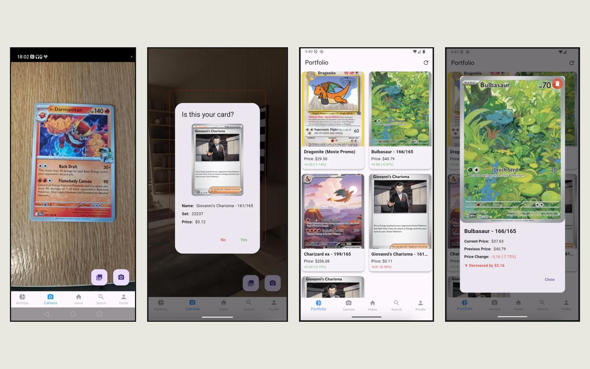
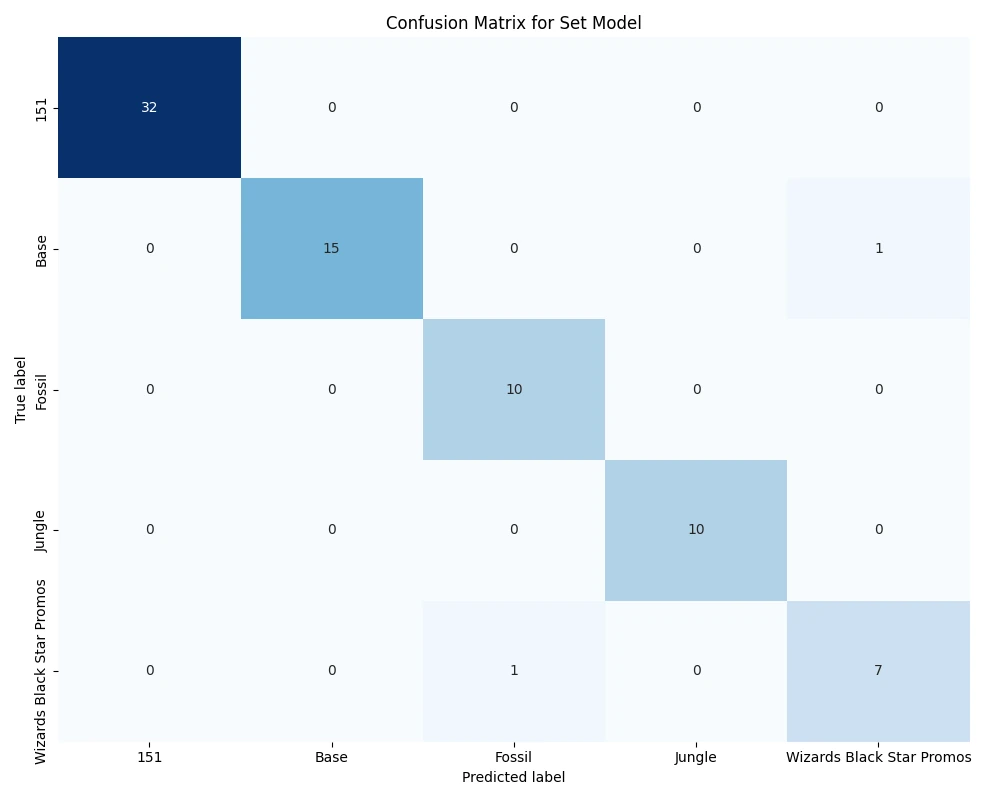
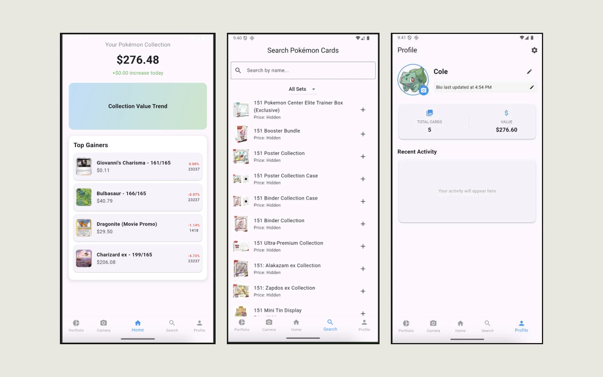

One photo instead of a hundred searches
A collection can run to hundreds of cards whose value changes week to week, and pricing it means searching for every card one at a time. The app turns that into a single step: photograph the card, confirm what it is, and it joins a collection that keeps its own prices up to date.

The outline is a promise
The camera screen shows a card-shaped outline to line the card up in. In testing, the photo didn't match it: it came out more zoomed in than the outline suggested, sometimes turned sideways, and the preview itself looked stretched. Each fix I was offered added more automatic processing, like smart cropping and orientation guessing, and each one made the result harder to predict.
I went the other way and set one rule: whatever is inside the outline is exactly what gets captured, with no automatic cropping and no zoom. The outline tells people what will happen, so the app has to keep its word.
- Separate what the person sees from what the model seesThe model needs a 224 by 224 pixel square, and squashing the photo into that shape was what made the confirmation image look zoomed in. The app now keeps two copies: a faithful crop shown back to you, and a resized one for the model. What you see is what you framed.
- Always ask before savingRecognition is a best guess, so nothing is added silently. A dialog shows the card it thinks you scanned, its set and its price, and you answer yes or no. One extra tap stops wrong cards from quietly piling up in someone's collection.
Two models, one question each
Rather than one model choosing between hundreds of near-identical cards, the work is split in two. The first model answers "which set is this from?" and the second answers "which card in that set?". Both start from MobileNetV2, a model already trained to understand images in general, and are retrained on 488 card designs from five sets. That approach is called transfer learning.

Accurate enough to trust
The set model scored 97.4% on held-out cards, and the card model identified every one of the 488 cards it was tested on. Training on rotated and darkened copies of each card improved results on unseen photos by about 6%, because real photos are rarely straight or well lit.
Small enough to live on the phone
Converting the models to TensorFlow Lite roughly halved their size for a point or two of accuracy at most, so scanning works without a server and without waiting on a connection. Only the price lookup needs the internet.
A trade-off I made on purpose: the card model first predicted rarity too, but that extra output broke the model when it was converted for the phone. I removed it, kept the app working on-device, and documented why in the dissertation. And a perfect score on a clean test set says as much about the test set as the model. Photos taken in a dim room are the next thing I'd test.
A collection that shows movement
Collectors care about what changed, not just what they own. The home screen leads with the total value and the cards that moved most, the portfolio shows each card's price with its change in green or red, and pulling down refreshes every price from live market data. A search screen covers sealed products too, and a profile keeps a running count of cards and total value.

Stack and methods
- Flutter
- Dart
- Python
- TensorFlow and Keras
- MobileNetV2
- TensorFlow Lite
- SQLite
- TCGplayer prices via TCGCSV
- Transfer learning
- Data augmentation
- Confusion matrix analysis
- On-device testing